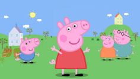

Peppa es una cerdita adorable pero a veces es un poco mandona. Tiene cuatro años y vive con Mamá Pig, Papá Pig y Gergoe, su hermano menor. A Peppa le gusta jugar con su mejor amiga Suzy Sheep, visitar a la Abuela y al Abuelo Pig y cuidar de George. Pero lo que más le gusta del mundo a Peppa es saltar en los charcos de barro, reír y resoplar superfuerte. Peppa, por lo general, es enojona y presumida con sus amigos, sobretodo con Suzy Oveja, y constantemente con su hermano, George. Ella cree ser siempre "la mayor" de todos y siempre quiere sobresalir en todo a lo que se le propone. Ella, por otro lado, tiene un buen sentimiento de cariño por sus abuelos, quienes la consienten. Peppa siempre busca paz en ella y no muestra ser muy tolerante.